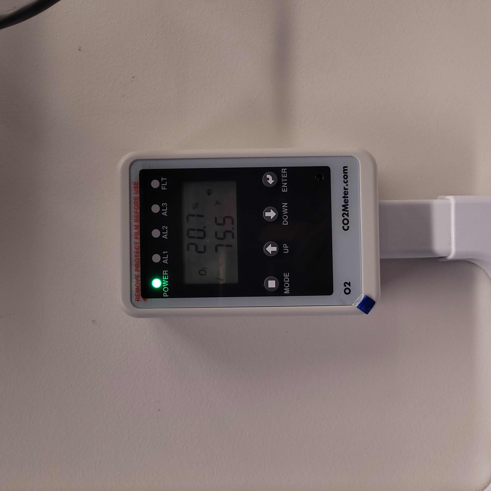

Vault-1 Ionizing Radiation Interlock System User Manual
This document provides a user overview for the Vault-1 Ionizing Radiation Interlock System. It covers the hazard indicators, control protocase, VIEWMARQ displays, and beacons in Vault-1 Control and Accelerator Lab. The control protocase allows users to view and change the secure state of Vault-1, arm the accelerator and transmitters, and monitor area monitors. The VIEWMARQ displays provide information on the ionizing radiation hazard status, laser hazards, and the secure state of Vault-1. The beacons indicate the enabled state of RF and ionizing radiation emergency stop buttons.
Vault-1 Ionizing Radiation Hazard Indicators
This section will cover the ionizing radiation hazard indicators in Vault-1 Control and Accelerator Lab. These indicators will correspond to hazards present in Vault-1 and RF-1.
Vault-1 Control Protocase
The Vault-1 Control IONIZING RADIATION INTERLOCK protocase is an interface to view if Vault-1 is secure, arm the accelerator and transmitters, and view the status of the area monitors. This panel is located on the east wall in Vault-1 Control next to the Vault-1 door.
The SECURE PERIMETER section of the protocase shows the status of search buttons being pressed during a search and if the shield door is open. If all the lamps are green, then Vault-1 is in a secure state. When Vault-1 is secure it may not be entered until accelerator operations are concluded and Vault-1 is surveyed. If the shield door is opened with the transmitters armed, then the interlock system will trip and put the transmitters into a safe state.
The AREA MONITORS section of the protocase shows the status of RADIATION, OXYGEN, and MICROWAVE area monitors. The corresponding hazard lamps will turn red if any of the ionizing radiation, \(O_{2}\), or microwave monitors in the CXLS suite are tripped. In the situation where any of these monitors are alarming the interlock system will trip and put the transmitters into a safe state.
The ACCELERATOR section of the protocase is for viewing and changing the arming status of the accelerator and both transmitters. The accelerator cannot be armed until Vault-1 is secured, and the transmitters cannot be armed until the accelerator is armed. This section of the protocase can also be used to override the interlocks on the transmitters to work on them in an armed state.

Figure 1: This is the Vault-1 Control Ionizing Radiation Interlock Protocase. In this state Vault-1 is not secured, and neither the accelerator or transmitters are armed. As well, there are no area monitors alarming or failing.
VIEWMARQ displays
There are two VIEWMARQ displays that share information on Vault-1 ionizing radiation hazard status. One in the Accelerator Lab to the right of the RF-1 door, and the other in Vault-1 Control above the Vault-1 door. See Figure 2 and 3 for the Vault-1 Control and Accelerator Lab VIEWMARQ displays respectively.
VIEWMAEQ Display Notes |
VIEWMARQ Display Text |
|---|---|
The VIEWMARQ display in Vault-1 Control shows LASER SAFE
because this display also shows laser hazards present in Vault-1.
However, in this case LASER SAFE means that it is RF SAFE as well.
The display in Accelerator Lab displays RF SAFE when neither
transmitter is armed.
|
Laser Safe / RF Safe |
Both VIEWMARQ displays show VAULT SECURE - RF ARMED once
Vault-1 is searched, secured, the accelerator is armed, and either one
or both transmitters are armed. Additional laser hazards will appear
here as well. See Vault-1 laser system manual for hazards.
|
Vault-1 Secure - RF Armed |
Both VIEWMARQ displays IONIZING RADIATION E-STOP ACTIVE
when any ionizing radiation e-stop in the CXLS suite is pressed.
|
Ionizing Radiation
E-Stop Activated
|

Figure 2: This is the Vault-1 Control VIEWMARQ display under all 3 RF conditions.

{kind=link}
{kind=link}
{kind=link}
{kind=link}
Figure 3: This is the Accelerator Lab VIEWMARQ display under all 3 RF conditions.
Beacons
There are blue, red, and orange beacons in Vault-1 Control and Accelerator Lab to the left of the VIEWMARQ displays. Specifically, they are the individual beacon modules, not the stacked units, which can be seen in figure 4. The stacked units correspond to the state of the Vault-1 laser interlock system.
{kind=link}
{kind=link}
Status |
Beacon Color |
|---|---|
The blue beacon indicates that RF has been enabled into the Vault-1 structures. |
Beacon Color |
The red beacon indicated that an ionizing radiation emergency stop button had been
pressed. This beacon is on the wall and on the protocase.
|
Beacon Color |
The orange beacon indicates that one of the O2 meters is reading below 19% \(O_{2}\)
levels.
|
Beacon Color |
O2 Main and Remote Units
There are two O2 sensors in the Vault-1 ionizing radiation interlock system. One is located in Vault-1 and the other is located in RF-1. If alarming, these units will sound an alarm and flash one of the AL# LEDs depending on the alarm set point it passed. Any \(O_{2}\) reading below 19% will cause the sensors to alarm, passing the AL1 set point. Each O2 sensor has a remote unit that has controls and displays information from the main unit, but does not have its own dedicated sensor. The Vault-1 remote unit is in Vault-1 Control and the RF-1 remote unit is in the Accelerator Lab.

|
 |
O2 main unit. ===================================================================== |
O2 remote unit. =================================================================== |
{kind=link}
Figure 5: This is the O2 sensor pair.
Ionizing Radiation Monitor
Note
The ionizing radiation monitor may go through changes in the near future. This section will be updated when those changes are made.
Ionizing Radiation Emergency Stop Buttons
Throughout the CXLS suite there are ionizing radiation emergency stop buttons. These e-stop buttons will cut power to the transmitters, putting the accelerator in a safe state. Once the transmitters are crashed, there will not longer be a source of ionizing radiation. When an ionizing radiation e-stop button is pressed, the LED on the unit will turn on, all red beacons will turn on, and the VIEWMARQ displays will show IONIZING RADIATION E-STOP ACTIVATED. To disengage the e-stop, rotate the button clockwise.
It is important to note that only the ionizing radiation emergency stop buttons will put the accelerator into a safe state. There is also laser emergency stop buttons that will only cut power to their specific laser if armed and do not affect the transmitters.

|
|
Ionizing radiation emergency stop button off. ============================================== |
Ionizing radiation emergency stop button on. =============================================== |
{kind=link}
Figure 6: This is the ionizing radiation emergency stop button in both states.
Search Procedure for Securing Vault-1
To arm the accelerator and transmitters, Vault-1 must be searched and secured. Starting at the west end of Vault-1 (down steam of the accelerator), while verifying the vault is empty, press the search button labeled 1. As you continue to search and clear press 2 then 3 as you’re working your way towards the vault entrance. Once the 3rd search button is pressed, a chime will be audible and a timer will start and all the SECURE PERIMETER SEARCH lamps on the Vault-1 Control IONIZING RADIATION INTERLOCK protocase will be green. If the search buttons are pressed out of order, or the search takes too long, the search will need to be restarted.
{kind=link}
Figure 7: This is a diagram of the Vault-1 search buttons. The numbers indicate the order in which they need to be pressed.

|
|
Vault-1 search button off. ============================================================ |
Vault-1 search button on. ============================================================= |
{kind=link}
Figure 8: This is the Vault-1 search button in both states.
{kind=link}
Figure 9: This is the Vault-1 Control Ionizing Radiation Protocase when all searched buttons have been pressed in the correct order.
Holding down the CLOSE button to the right of the protocase, close the shield door up to the yellow and black tape but not covering the tap. Once the door is fully closed and actuating the door switches the SHIELD DOOR lamp on the Vault-1 Control IONIZING RADIATION INTERLOCK protocase will be green.
{kind=link}
Figure 10: These are the Vault-1 shield door control buttons.

Figure 11: This is the Vault-1 Control Ionizing Radiation Protocase when the shield door is closed.
Arming the Accelerator and Transmitters
Non-Armable States
Besides Vault-1 not being secured, if any of the area monitors are alarming or failing the respective AREA MONITOR lamp will turn red and the accelerator will not arm. If the accelerator is already armed and either of these states change, the accelerator will disarm.
Arming Procedure
Once Vault-1 is secured the accelerator can be armed. To arm the accelerator, turn the ACCELERATOR ENABLE key on the Vault-1 IONIZING RADIATION INTERLOCK protocase. The STATUS lamp will turn green. Now that the accelerator is armed, the transmitters can be armed.

Figure 12: This is the Vault-1 Control Ionizing Radiation Protocase when the accelerator is armed.
Like the accelerator, to arm the individual transmitters turn the TRANSMITTER ENABLE key on the Vault-1 Control IONIZING RADIATION INTERLOCK protocase. The STATUS lamp will turn green for the transmitter you armed. Once either of the transmitters are armed the VIEWMARQ displays in Vault-1 Control and Accelerator Lab will display VAULT SECURE - RF ARMED and the blue beacons next to the displays will be on. At this state the transmitters can be set to trig and power can be enabled into the RF structures.
The accelerator and transmitters can be disarmed by pressing the ACCELERATOR RESET button on the Vault-1 Control IONIZING RADIATION INTERLOCK protocase.
{kind=link}
{kind=link}
{kind=link}
Figure 13: This is the Vault-1 Control IONIZING RADIATION INTERLOCK protocase when the transmitters are armed.
Putting Vault-1 into a Non-Secure State
Once the transmitters are no longer triggering, the accelerator and transmitters can be disarmed. This can be done by pressing the ACCELERATOR RESET button on the Vault-1 Control IONIZING RADIATION INTERLOCK protocase, where all green STATUS lamps will turn red. This will keep Vault-1 in a secure state while disarming the accelerator and transmitters. To put Vault-1 into a non-secure state, simply opening the shield door will disarm the system and turn all green STATUS and PERIMETER lamps will turn red.
Note
2 minute must pass from the transmitters being brought to a safe state and the accelerator being disarmed before the Vault-1 door can be opened.
Vault-1 Radiation Survey Procedure
For Vault-1 to be cleared for open entry, it must first be surveyed for ionizing radiation.

|
|
Personal dosimeter. ================================================================ |
Dosimeter storage board. =========================================================== |
{kind=link}
Figure 14: This is the personal dosimeter and the dosimeter storage board. Your personal dosimeter should be worn at all time during the operation of the CXLS electron beam. If your dosimeter is not on your person, it should be on the dosimeter storage board, located in the corridor outside of Hutch Control / Experiment Prep entrance.
Once the two minutes have elapsed, the Vault-1 can be opened, and the survey can be performed. The surveyor, along with his personal dosimeter, must also wear a electronic personal dosimeter. This unit will alarm if the surveyor is exposed to more than 5 mrem/hr.
{kind=link}
{kind=link}
{kind=link}
Figure 15: This is the Ludlum 23 electronic personal dosimeter, how it is to be worn, and the draw holding the Ludlum 23. This draw holding the units is located at the desk to teh left when entering the Accelerator Lab.
To perform the survey, the Ludlum 9DP is used to measure the gamma dose rate. Once Vault-1 shield door is opened, they surveyor should slowly enter, watching the readings. Go down the beam line, slowly scanning around inch away from the beam line and fill in the survey sheet. If any element reads above 20 µR/hr, scan from 30 cm away to verify the general area is not above background from normal viewing distance.
Note
A survey sheet exist for routine Vault-1 radiation surveys, but not a dedicated sheet for specifically post beam time surveys.

|
|
Ludlum 9DP pressurized ionization chamber. ============================================== |
Cabinet holding the Ludlum 9DP. ========================================================= |
{kind=link}
Figure 16: This is the Ludlum 9DP pressurized ionization chamber and the cabinet holding the Ludlum 9DP.
Once the Vault-1 radiation survey is completed, and it is verified that there are no elevated levels of ionizing radiation, Vault-1 can be entered by anyone. Enter the readings into the designated spread sheet and sign the survey sheet.
Note
A specific post beam time survey excel sheet does not exist. This may simply be merged with the routine Vault-1 radiation survey sheet.
Overriding the Transmitters to Work in an Armed State
When the transmitters are armed, attempting to remove the side panels for maintenance will cause the transmitters to lose power. If work needs to be done on the transmitters in an armed state, you must override the interlocks on the transmitters. To do this turn the OVERRIDE key on the Vault-1 Control IONIZING RADIATION INTERLOCK protocase. The STATUS lamp for the transmitter in override will turn orange. In this state, working on the armed transmitters will not cause the interlocks to trip.
{kind=link}
{kind=link}
Figure 17: This is the Vault-1 Control IONIZING RADIATION INTERLOCK protocase in an override state.